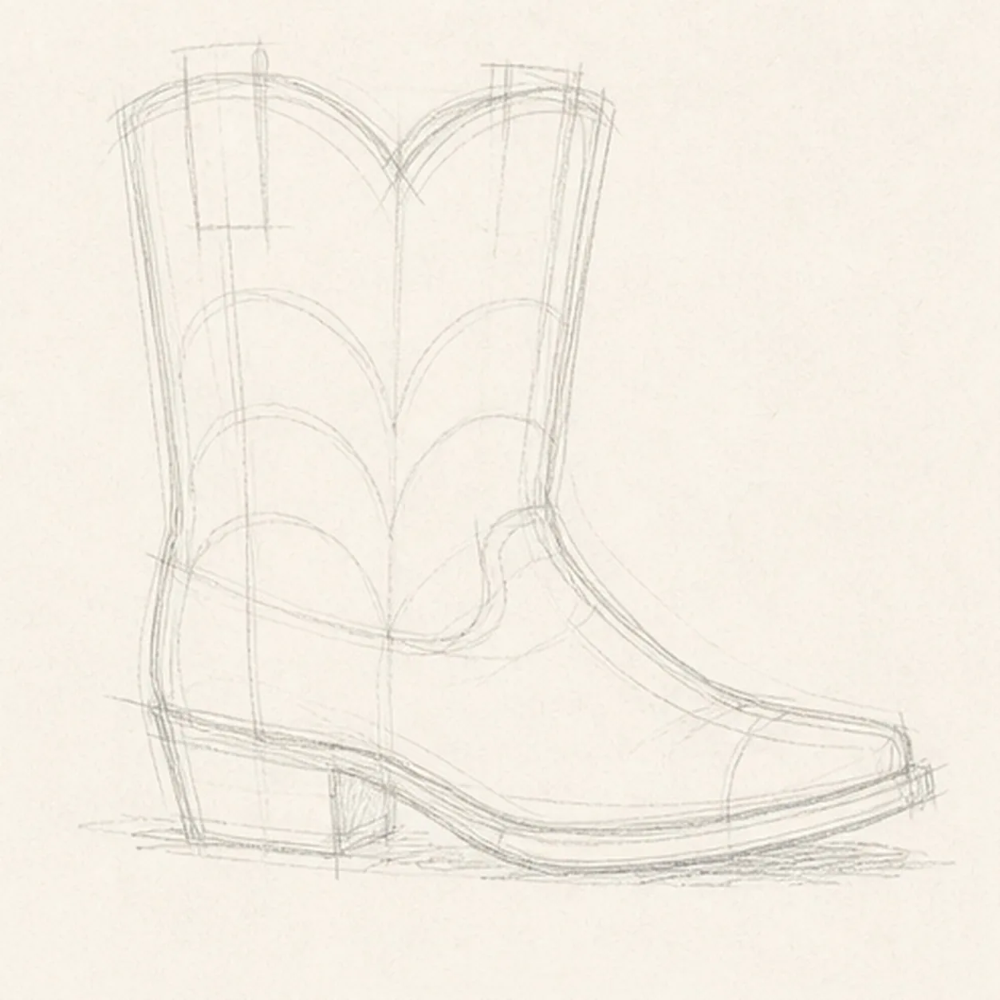
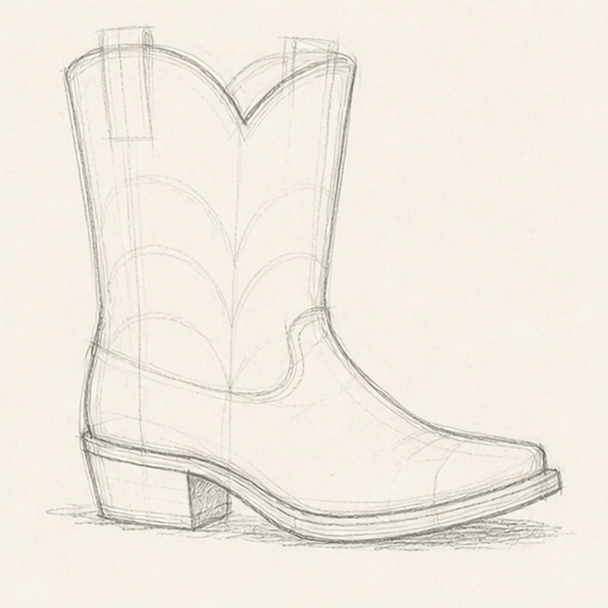
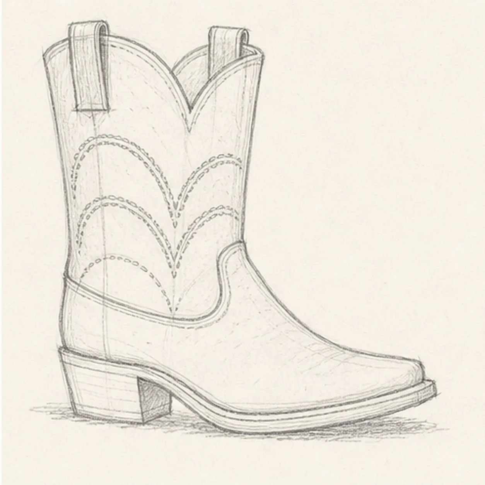
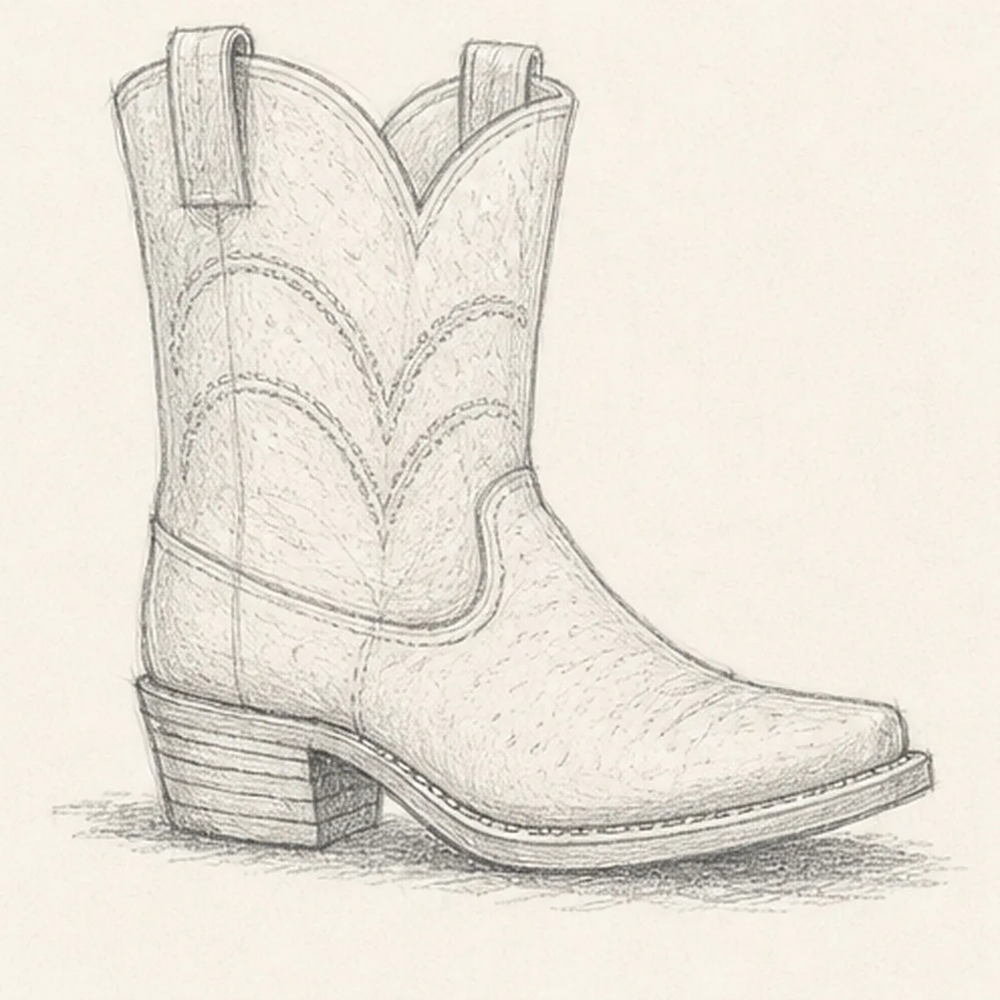
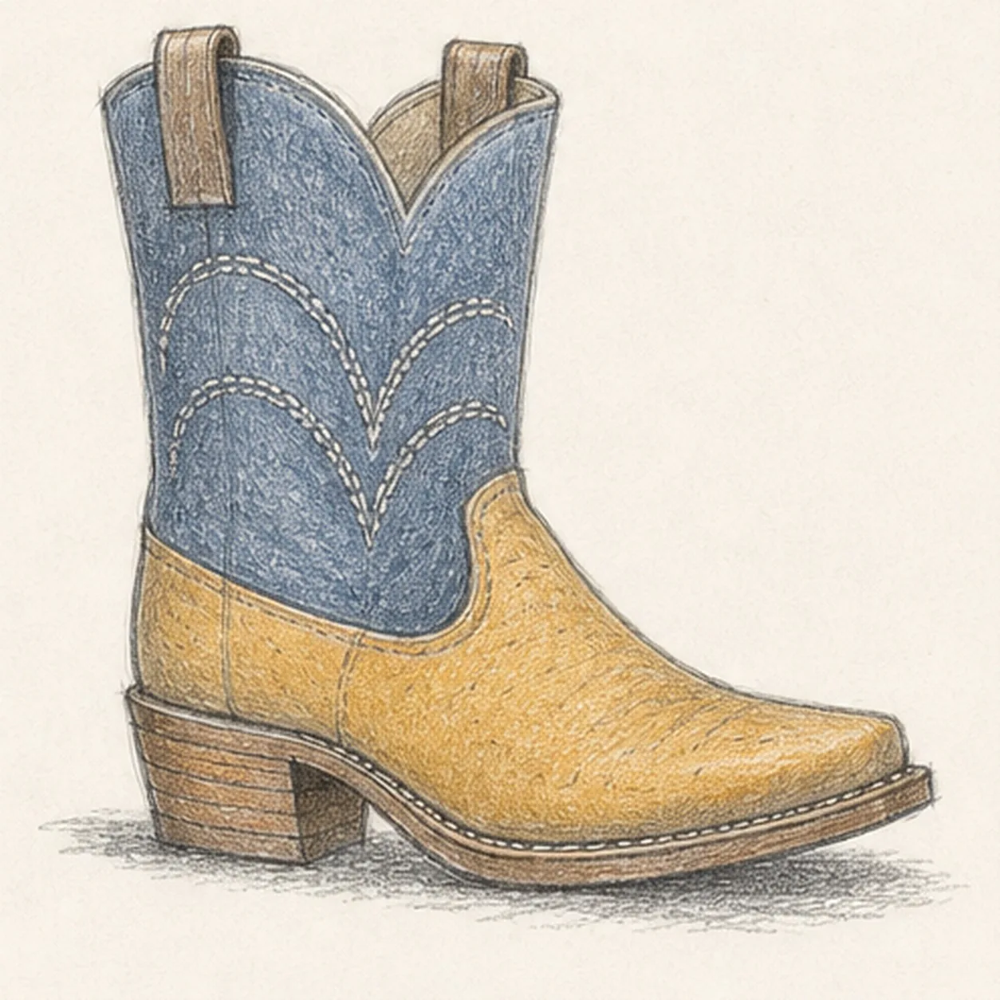

From the archive
Let's draw a cowboy boot with decorative stitching
Treat this as one small practice round: build the subject lightly, notice the shapes, then darken only the lines that help the finished sketch.
-
01

Map the western boot
Use pale graphite to place the complete right-facing boot envelope, shallow V-cut opening, pointed toe, two pull-loop routes, layered sole, stacked heel, curved vamp seam, three mirrored stitch-band routes, open highlights, and a broken shadow footprint.
Sketch tip: Ghost the tall shaft and long toe envelope before touching down, then compare their heights. Reserve the loops behind the shaft rim and the sole beneath the upper now so no finished line needs erasing later.
-
02

Shape the boot and heel
Wrap the guides with one gently tapered boot upper, angled ankle, pointed toe, layered sole, and blocky stacked heel while preserving every opening, loop, seam, stitch, highlight, and shadow route.
Sketch tip: Rotate the page for the long toe and sole curves, and watch the open wedge below the ankle. Let the heel lean beneath the back of the shaft instead of drifting under the center of the boot.
-
03

Fit the western details
Clarify the shallow V-cut opening, exactly two pull loops, one curved vamp seam, and three stacked mirrored decorative stitch bands on their reserved routes.
Sketch tip: Draw the two sides of each stitch band as a mirrored pair, but keep small handmade differences. Trace the shaft rim with your finger before darkening it so both loops remain visibly tucked behind the opening.
-
04

Build the leather texture
Add sparse directional leather grain, short welt marks, stacked heel layers, open paper highlights, and the established broken graphite shadow without changing the boot silhouette or counts.
Sketch tip: Curve short texture strokes around the shaft and vamp instead of shading straight across them. Keep the welt marks irregular and stop the ground shadow at the toe, sole, and heel.
-
05

Layer the worn leather color
Glaze dusty indigo over the established shaft, muted ochre over the vamp, and warm brown over the sole and heel while preserving graphite texture and open paper highlights.
Sketch tip: Build two light pencil layers in the direction of each leather form. Leave the shaft edge, toe crown, vamp seam, and sole rim lighter so the dark boot stays readable at thumbnail size.
-
06

Set the boot in its tracks
Strengthen selected keeper contours, deepen the existing leather grain and shadow, balance the established indigo, ochre, and brown, clarify the same highlights, and soften only pale guides that distract.
Sketch tip: Count one pointed toe, one shaft, two pull loops, three stitch bands, one sole, one heel, and one shadow before stopping. Change the leather colors if you like, but preserve the side-view structure and overlap order.